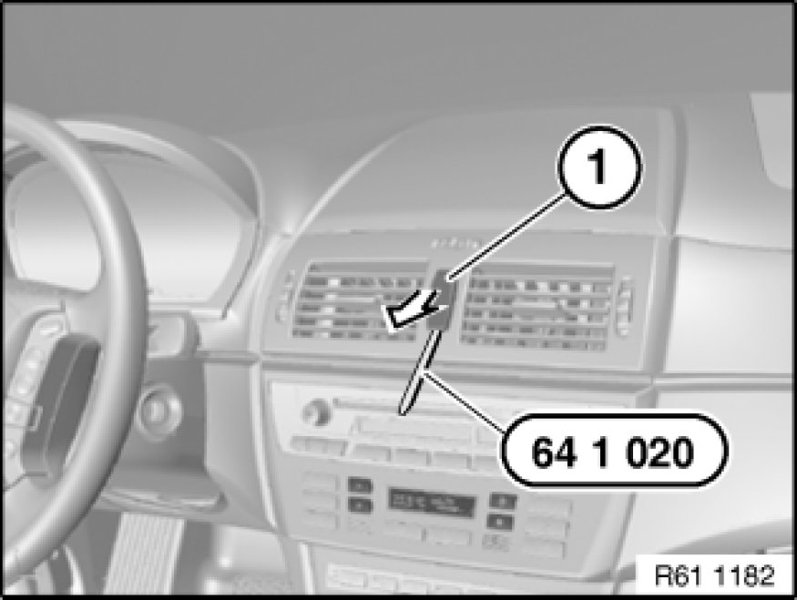

Hazard Warning Switch: Service and Repair
61 31 079 - Removing and installing/replacing switch for hazard warning flashers/central locking

Special tools required:
- 64 1 020 64 1 020 Release Hook

Lever out switch for hazard warning system/central locking (1) with special tool 64 1 020 64 1 020 Release Hook and pull back.
Disconnect associated plug connection and remove switch for hazard warning system/central locking (1).